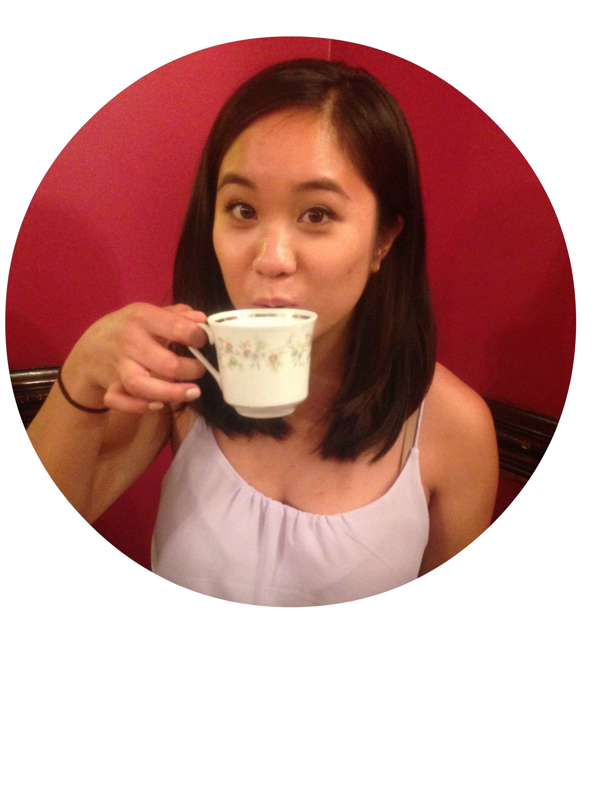

DIANA KRIS NAVARRO!

[WHO]
Hello I'm Diana! Welcome to my corner of the internet. I'm a Filipino engineer frolicing the streets of Brooklyn, New York. I'm currently chief agitator /senior tech leader /coder /human at a startup.
[AWARDS/HONORS/HIGHLIGHTS]
- I was honored with the Girls First leadership award at the Girls Who Code 10 year anniversary celebration in NYC.
- I accepted the Webby Award for our work on Girls Who Code's Sisterhood campaign - video here
- I'm on an episode of Reid Hoffman's Masters of Scale with Reshma Saujani - episode here
- I speak about tech accessibility on Render's Culture and Code - episode here
- I was on the front page of NJ's Sunday Star Ledger for International Women's Day - article here
- The Philippines Consulate of NY honored me as one of five accomplished Filipino-American women.
- I was featured in a music video for our International Day of the Girl campaign. (You can see me at 2:06 and 2:29) We were featured on Cartoon Network, MSNBC, Adweek and more! We also got a shout out from Erykah Badu, and Chelsea Clinton! 😍
- I was a hackNY fellow in 2017 and mentor in 2018
- I represented Girls Who Code at the Governor's Women's Justice Agenda. Hillary Clinton made some time for us.
- I was interviewed for a Forbes article. The CEO of AppNexus interviews me for a piece on women in technology.
- I was part of the 3% selected to be a Square Code Camp student
- I mentored the NYU Abu Dhabi Hackathon for Social Good in the Arab World. My team won 2nd place.
- I organized a hackathon for hackNY. I got to organize my first Filipinos in Tech meetup. (I'm the one recording ha)
- Adobe featured me on their blog for giving talks and mentoring their Girls Who Code classes.